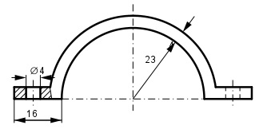

Aufgabe 230 Wie groß ist die Fläche A der Schelle? Die Laschen seien Rechtecke.

A = Kreisring + 2 * Rechteck(Lasche) – - 2 * Rechteck(Bohrung) (272 - 232) * π Kreisring = ------------------ = 314 mm2 2 2 * Rechteck(Lasche) = 2 * (16 – 4) mm * 4 mm = = 96 mm2 2 * Rechteck(Bohrung) = 2 * 4 mm * 4 mm = 32 mm2 A = 314 mm2 + 96 mm2 - 32 mm2 = 378 mm2